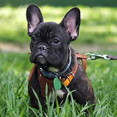
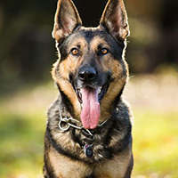
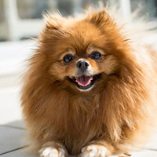
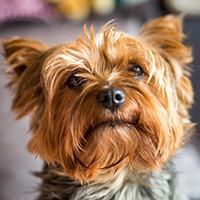

The Corgi is a cattle herding dog breed that originated in Wales, UK.
French Bulldogs have large ears and a life expectancy of 10-14 years.
The German Shepard is (surprise) from Germany. They are medium-large in size.
Pomeranians have been classified as a toy dog breed due to their small size!
The Yorkshire Terrier has been given the name "Yorkie" and originated in Yorkshire, England.